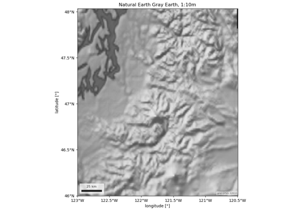
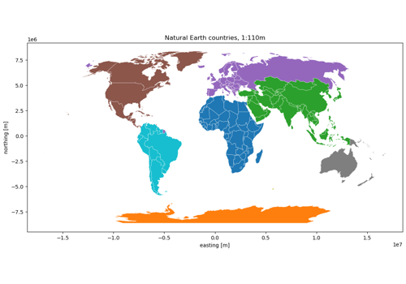
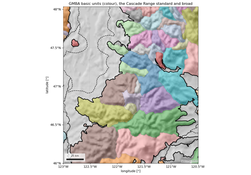
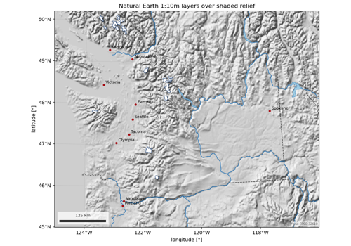
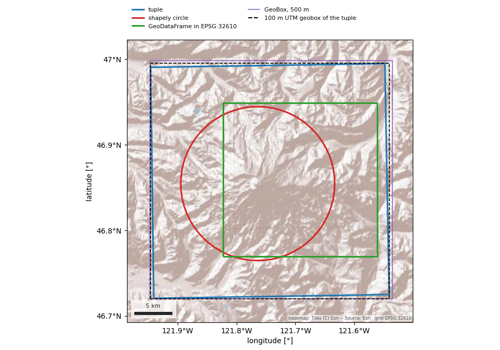

Example gallery#
One short script per product: load it over one area of interest, say which routes serve it, and draw one or two figures. Every script is executed when the docs are built, so a figure on this page is a figure the package produced against live data on that day.
The sections follow the package: esd.stations, esd.snow, esd.sar,
esd.optical, esd.terrain, esd.land, esd.hydro, esd.climate,
then the cross-cutting tools. Examples that need provider credentials run in the
scheduled build, which has them (Credentials); a pull-request build
reuses their last output and executes the rest.
Each page offers the script and a Jupyter notebook to download.
Stations#
Point observations from five public snow networks (SNOTEL and AWDB, CDEC, DataBC, NVE, Yukon), the daily archive that pre-downloads them all, and one call that reads across every network.


Snow#
Snow classifications, masks, cover and snow water equivalent.


SAR#
Sentinel-1 radiometrically terrain-corrected backscatter and the local incidence angle.

Sentinel-1 RTC backscatter and local incidence angle
Optical imagery#
Passive optical products: Sentinel-2 L2A, HLS (Landsat and Sentinel-2 on one grid) and PlanetScope.


Terrain#
Five digital elevation models behind one load (Copernicus, NASADEM, SRTM,
3DEP, ALOS World 3D), the CHILI heat-load index, and Natural Earth shaded
relief as a hillshade basemap.


Digital elevation models: Copernicus, NASADEM, SRTM, 3DEP, ALOS

Hillshade: Natural Earth shaded relief as a basemap
Land cover#
Land cover, forest cover and vegetation products.


Hydrography#
Basin and watershed boundaries.

Boundaries#
Countries, states and provinces, US counties, administrative units at any level, Natural Earth map layers, GMBA mountain ranges and RGI glacier outlines.

Countries, states, counties and admin units

Glacier outlines: Randolph Glacier Inventory 7.0 and 6.0

Mountain ranges: GMBA Mountain Inventory v2

Natural Earth map layers: lakes, rivers, glaciers, places
Climate and reanalysis#
ERA5 / ERA5-Land reanalysis and the Köppen-Geiger climate classification.


Köppen-Geiger climate classification (Beck et al.)
Tools#
The helpers every product shares: areas of interest in any form, time ranges, water years and day-of-water-year coordinates, and the catalog itself.

Areas of interest, time ranges and the catalog